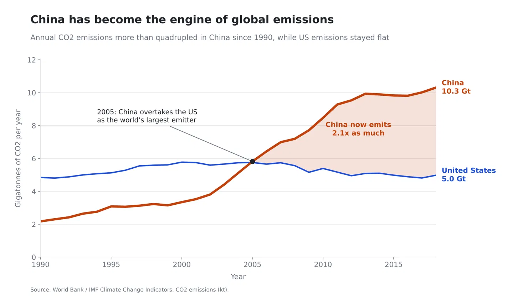
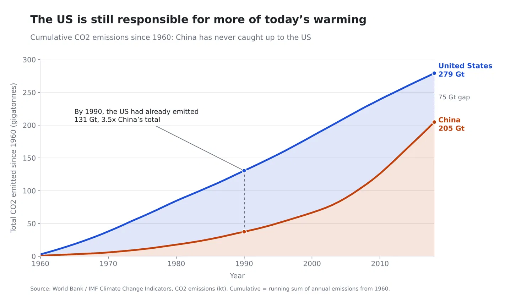

Proposition: “China, not the United States, is most responsible for climate change.”
FOR the Proposition

Design Decisions and Rationale:
- Data filtering: Starting the x-axis at 1990 (Score: -1)
We started in 1990 because it shows China’s emissions more than quadrupling (2.2 to 10.3 Gt) while the US stays relatively flat. This drastic contrast makes China look like a major problem when it comes to climate change. The title, “China has become the engine of global emissions,” drives that message home. Starting in 1960 would have shown decades of higher US emissions, so we left them out as a deceptive measure. - Data transformation: Using country totals without adjusting for population (Score: -1)
We used country totals because they make China’s emissions look as large as possible. China has about 4.3 times as many people as the US, so per person the average American actually emits about twice as much. Leaving out population keeps readers focused on China’s size instead. - Line width: Making China’s line thicker (Score: 0.5)
We made China’s line thicker to highlight it as the focus of the chart, which is a common way to draw attention to the main subject of the graph. It does not change any of the data values, and the readers can still comapre both lines accurately. This gives China's line more visual weight. - Area: Shading the gap after 2005 (Score: -0.5)
We shaded the gap after China passes the US so its extra emissions look like a large, growing mass, and labeled it with a calculated ratio (“China now emits 2.1x as much”) to make the difference concrete. We only shaded China’s lead, so the years when the US emitted more don’t stand out. - Line, color, and position: Red and blue lines on a zero-based axis (Score: +1.5)
We used a line chart with a y-axis starting at zero, and time along the x-axis. Red and blue make the countries easy to distinguish, and red adds a subtle sense of alarm around China. Because the basic design looks fair, readers are more likely to accept the conclusion.
AGAINST the Proposition

Design Decisions and Rationale:
- Data transformation: Using a running total instead of yearly emissions (Score: +1)
We used a running total because it shows how much CO2 each country has put into the atmosphere overall, and the US still leads, 279 vs. 205 Gt. Since CO2 stays in the atmosphere for centuries, this makes a strong case that the US is more responsible historically, even though China emits more each year now. - Data filtering: Starting the running total in 1960 (Score: -1)
We started in 1960 because it captures decades of high US emissions, which gives the US a lead China hasn’t caught up to. It’s the first year in the dataset, so it looks like a natural choice, but starting in 1990 would put China ahead (169 vs. 154 Gt). The subtitle, “China has never caught up to the US,” makes the US lead sound permanent. - Area: Shading the gap and the area under China’s line (Score: -0.5)
We shaded the gap between the lines in blue so the US’s extra emissions look like a huge, solid block. Filled areas emphasize volume, which makes the US lead feel heavier than plain lines would. - Dotted line: Marking the gap in 1990 and 2018 (Score: +0.5)
We added dotted lines to put an exact number on the US lead (75 Gt in 2018), and the annotation shows the US had emitted 3.5 times China’s total by 1990. Highlighting the gap keeps attention off the trend: at 2018 rates, China would close it in about 14 years. - Color and position: Keeping the same encoding as Figure 1 (Score: +1.5)
We used the same colors, line format, and zero-based y-axis as Figure 1 so the two charts feel like a fair, side-by-side comparison. That sense of fairness makes readers more likely to trust this chart’s conclusion.
Final Reflection
The proposition we are trying to persuade is: “China, not the United States, is most responsible for climate change.” Figure 1 supports this proposition by showing that China’s annual CO2 emissions have more than quadrupled since 1990 and are now about twice those of the US. Figure 2 argues against it by showing that, counting all emissions since 1960, the US has put more CO2 into the atmosphere than China (279 vs. 205 Gt). Our main deceptive technique is data filtering: Figure 1 starts in 1990 and Figure 2 starts in 1960, and the start year decides which country looks more responsible. This happens because the US industrialized first and emitted far more for decades, while China’s emissions only took off as it industrialized later. If Figure 2’s running total started in 1990 instead, China would lead (169 vs. 154 Gt). We used two different measures, yearly emissions and a running total, so each chart’s time window feels natural for its own argument rather than looking like the same chart cropped two ways.
At first, it was difficult to decide on which dataset we wanted to work with since there is a lot of data and the team had different interests. We ultimately decided to go with the climate change dataset within the World Bank/IMF Climate Change Indicators since it combined our interests. It was also difficult to figure out which proposition we wanted to go with, balancing ethics and overall how we would convey that problem. We had some pre-existing beliefs from other classes and prior knowledge about which country contributes more to climate change. But after wrangling and then visualizing the data, it was surprising to see that the leader in producing the most carbon emissions changes depending on the metric. What we also found surprising was how easy it is to mislead viewers by presenting data using certain design choices. Coming away from this project, we understand that there are often two sides to every story, and data visualization is a great tool to obscure one for the other.
We define ethical analysis to be a fair representation of the data that is not fabricated, and ethical visualization as displaying that data in a clear format to the viewer. The line that crosses into misleading visualizations versus persuasive ones is when the data is either fabricated, misused, or misrepresented. For example, some data could have been made up, or certain differences in the data could be blown up to make them seem larger than they actually are. Our charts use real data and axes that start at zero. However, we chose to start one chart’s x-axis at 1990 and the other at 1960 to make one country or the other look more responsible. Neither choice is false, but each one hides information that would change the reader’s conclusion. Even so, we still think the data is sound. Our choices highlight differences that really exist rather than inventing them: China does emit more each year now, and the US has emitted more in total over time. The time window decides which of these true differences the reader sees. Because of this, we think a persuasive choice becomes misleading when a reasonable alternative would flip the takeaway, and the reader is not told about it.